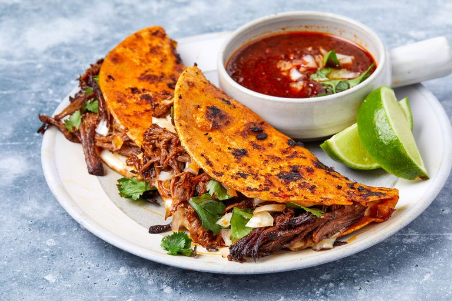

Birria Tacoss

You may have only heard about birria sometime in the last few years, but this gloriously rich bright red stew has been consumed throughout Mexico, especially in its birthplace of Jalisco, for generations. It is a stalwart of big celebrations and cookouts, as well as a fantastic hangover cure that is usually required after said celebrations.
You'll see it served in the form of tacos (or quesadillas or tortas or mulitas) all over your social media feed, but "birria" refers to the stew. It's traditionally made with goat meat that is braised for hours with dried chiles, garlic, and various spices to produce a flavorful consomé (broth) and tender meat. Depending on the preparation, birria can be thick (like a Texas-style chile) or loose (like a classic beef stew).
To help in developing this recipe, I turned to José Moreno head chef and co owner of New York premier birria truck, Birria-Landia. Though he wasn't ready to give up his famous recipe, he was more than happy to give us some cooking tips.
“For the brodo [broth] to taste really good you need bones." As with many broth-focused dishes (like pho, tonkotsu ramen or beef demi-glace), José’s birria derives a lot of its flavor from beef bones and marrow.
His preferred bone-in cut is beef shank that he buys from a specialty wholesale butcher, but when he was starting out with smaller batches he used beef short ribs. Short ribs are one of the best things to braise and are, luckily, easy to come by. To supplement these boney cuts and add some more meat to the dish, José recommends cuts like top round or brisket, which are well-suited for hours of braising and will result in a shreddable, juicy topping for your tacos
It should be filled with chiles—but not too spicy!
José uses a mix of dried chiles to provide the flavor backbone of the dish, while also achieving the dark red color that birria is known for. However, despite being packed with chiles, José says a classic birria shouldn’t be spicy. You can see that through his choice of the central chili pepper in his birria: “The base of my birria is guajillos. You cannot make birria without guajillos”. Guajillos are one of the most popular and commonly used chili pepper in Mexican cuisine and provide an earthy, sweet flavor that does well to supplement other tastes and types of chiles. José supplements the mild flavor of guajillos with some moritas—jalapeños that have been smoked and dried. They add a bit of smokiness and heat that really add to the birria's complexity.
Low and slow is the way to go.
José braises his birria for hours. This long cook time is absolutely necessary to break down and tenderize the brisket while also leaching the beef bones of all their flavor. I know it may seem laborious, but the reality is once you’ve gotten everything in the pot and put in your oven, you have 4 to 5 hours to do whatever you like.
We took all of these tips and ideas to heart in developing our own recipe below. And though birria can be served in countless ways, we love making quesatacos stained red with the fat of the birria and seared until almost crispy. This helps melt queso oaxaca and create what is essentially a mini quesadilla. What's not to love?
Of course you cannot forget to serve them with a side of consomé. Half the joy of eating birria is absolutely drowning whatever you've stuffed with your brisket and short rib into the flavorful broth. Tried making birria at home? Let us know how it came out in the comments below!
INGREDIENTS:
FOR THE BIRRIA
- 5 dried guajillo chiles
- 3 dried morita chiles
- 3 dried pasilla chiles
- 1 1/2 tbsp. vegetable oil
- 2 lb. beef brisket or beef chuck roast
- 2 lb. oxtails, short ribs, or beef shank
- Kosher salt
- Freshly ground black pepper
- 10 cloves garlic
- 6 cloves
- 1 cinnamon stick
- 1 tsp. dried oregano
- 1 1/2 tsp. cumin seeds
- 3 Roma tomatoes, halved
- 1/4 c. white wine vinegar
- 1 large onion, quartered
- 5 bay leaves
FOR THE BIRRIA QUESATACOS
- Corn tortillas
- Shredded Oaxaca or mozzarella cheese
- Freshly chopped cilantro for topping
- 1 large white onion, finely chopped for topping
- Lime wedges for topping
DIRECTIONS:
FOR THE BIRRIA
- Preheat oven to 350º F. In a large, heavy-bottomed pot or Dutch oven, over medium heat add guajillo, morita and pasilla chiles. Toast the chiles for 1 to 2 minutes, moving frequently to ensure they don’t scorch. Remove to a medium bowl and cover with enough boiling water to cover the chiles, about 3 cups. Use a small plate or bowl to completely submerge the chiles. Let sit for 20 minutes or until rehydrated and pliable. Remove the chiles and reserve the liquid.
- While the chiles soak, season beef with salt and pepper. Increase the heat in the dutch oven to medium high and add vegetable oil. Working in batches, sear the beef thoroughly (6 to 7 minutes per side for the brisket/roast, 4 to 5 minutes for the bone-in parts). Remove seared beef to a plate or cutting board.
- In a blender add the dehydrated chiles, garlic, cloves, cinnamon stick, oregano, cumin seeds, tomatoes, vinegar and 1 ½ cups of the chile liquid. Blend for about a minute or until the mixture becomes a pourable paste.
- Return the beef to the Dutch oven over medium heat and add the quartered onion and bay leaves. Add the chile paste and enough water to just cover the beef (for us this was 3 to 4 cups of water). Bring the birria to a simmer.
- Remove the Dutch oven from the heat, cover and move it to the preheated oven. Braise the birria for 4 to 4 ½ hours or until all of the beef is fork tender. Discard the bay leaves and onion and move the beef to a cutting board. Reserve all of the broth (or consomé). Shred the beef and set aside.
- Taste the consomé and season with salt and pepper. Depending on your preference of the style of birria you want, you may want a thinner consomé. If you want to thin it out, add your desired amount of water, chicken or beef stock. Bring to a simmer and taste/season again.
- Birria can be stored in the fridge, in airtight containers, meat and consomé separated, for up to 5 days.
FOR THE BIRRIA QUESATACOS
- In a saucepan, over medium low heat, bring the consomé to a bare simmer (there should be a layer of dark red looking fat/oil on the top). Construct a taco station that includes: the consomé simmering on one burner, a cast-iron pan or plancha heated over medium heat, a plate of shredded beef from the birria, and corn tortillas to the side, as well as small bowls filled with shredded Oaxaca cheese, cilantro and chopped onions.
- Working in batches, take about ⅓ cup of beef and add to the pan or plancha and begin to reheat and sear the beef, tossing occasionally to ensure even browning. Take one corn tortilla and dip it shallowly into the consomé, coating both sides with the dark red fat. Place the tortilla on the pan or plancha and cover with Oaxaca cheese.
- Fry the tortilla for 3 minutes or until the cheese has mostly melted and the underside has browned and started to crisp. Place the now seared meat on one half of the tortilla and top with cilantro and white onion. Fold the tortilla into a taco, sear each side for an additional 30 seconds and remove. Repeat this process until you have run out of beef.
- Serve the tacos topped with cilantro and onion, with lime wedges on the side, and small bowls of consomé for dipping.